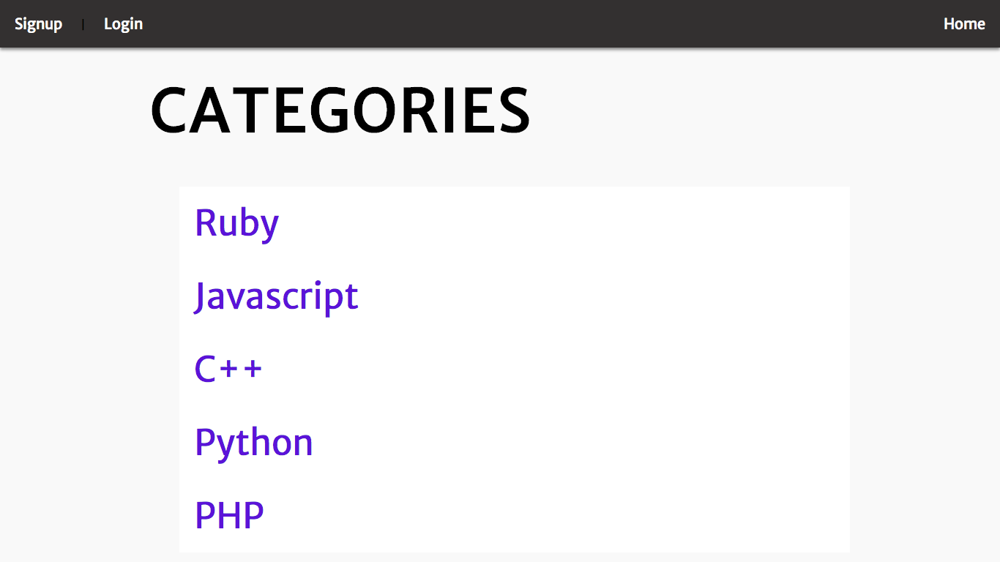
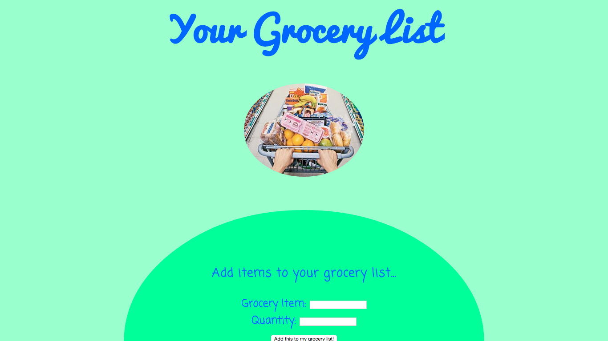

A mood-based music player with 3D interactive visualizer and crowdsourced song/mood database (utilizing three.js library for animation and Web Audio API to analyze music frequency data)
An exercise in creating an 'overflow' style website in Rails, Matrix Overflow is like Stack Overflow redesigned to focus on the most popular subjects and highest voted posts
My first attempt at a very simple javascript web app
